👨🍳 Une cuisine authentique
Toutes nos recettes respectent les traditions culinaires congolaises.
Une cuisine congolaise authentique, préparée avec passion depuis plusieurs années.

Situé au cœur de Brazzaville, le Restaurant Perets vous invite à découvrir les saveurs authentiques de la cuisine congolaise.
Chaque plat est préparé à partir d'ingrédients frais et sélectionnés avec le plus grand soin afin d'offrir une expérience culinaire mémorable.
Que vous soyez en famille, entre amis ou en rendez-vous professionnel, notre équipe est heureuse de vous accueillir dans un cadre chaleureux et moderne.
"Notre mission est de faire découvrir la richesse de la gastronomie congolaise à travers des plats généreux, authentiques et préparés avec passion."
Depuis son ouverture, le Restaurant Perets s'est donné pour mission de promouvoir la cuisine congolaise traditionnelle tout en y apportant une touche de modernité.
Nos recettes sont inspirées des différentes régions du Congo et sont réalisées par une équipe de cuisiniers passionnés.
Notre philosophie repose sur trois valeurs :
Toutes nos recettes respectent les traditions culinaires congolaises.
Nos ingrédients sont sélectionnés quotidiennement auprès de producteurs locaux.
Notre personnel est à votre écoute afin de rendre votre expérience agréable.
Le Restaurant Perets est idéal pour les repas en famille, les anniversaires, les réunions professionnelles et les événements privés.
Découvrez une expérience gastronomique unique et laissez-vous séduire par les saveurs de la cuisine congolaise.
👇 Accédez directement à notre formulaire de réservation.
Chaque jour, notre chef sélectionne une recette emblématique mettant à l'honneur les saveurs traditionnelles du Congo.
Recommandation du Chef
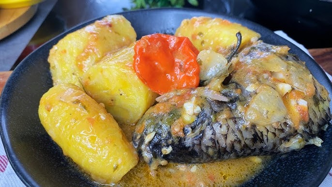
Le Liboké est l'un des plats les plus emblématiques de la gastronomie congolaise. Le poisson est délicatement assaisonné, enveloppé dans des feuilles de bananier puis cuit lentement afin de préserver toutes ses saveurs.
Il est accompagné de bananes plantains, de Manioc ou de riz parfumé selon votre préférence.
Prix : 8 500 FCFA
Portions : 1 à 2 personnes
★★★★★ 4,9 / 5 (248 avis)
"Un des meilleurs Liboké que j'ai dégusté. Le poisson est fondant, les épices parfaitement équilibrées et le service est irréprochable."
— Client fidèle
Ce plat contient du poisson.
Merci de signaler toute allergie alimentaire à notre personnel avant votre commande.
Pour une expérience authentique, accompagnez ce plat d'un jus de gingembre frais et terminez votre repas par une salade de fruits exotiques.
Commencez votre repas avec une sélection d'entrées préparées à partir de produits frais, inspirées des traditions culinaires congolaises.
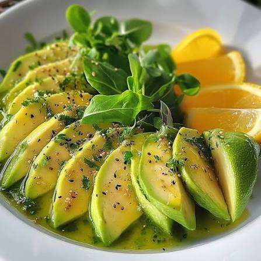
Avocat mûr accompagné d'une vinaigrette maison, d'oignons rouges et de tomates fraîches.
🌶️ Piquant : Aucun
⏱️ Préparation : 10 minutes
💰 Prix : 2 500 FCFA
Préparés selon une recette traditionnelle, nos beignets sont servis chauds avec une sauce légèrement épicée.
🌶️ Piquant : Léger
⏱️ Préparation : 15 minutes
💰 Prix : 2 000 FCFA
Bananes plantains soigneusement grillées puis légèrement assaisonnées.
🌶️ Piquant : Aucun
⏱️ Préparation : 12 minutes
💰 Prix : 2 200 FCFA
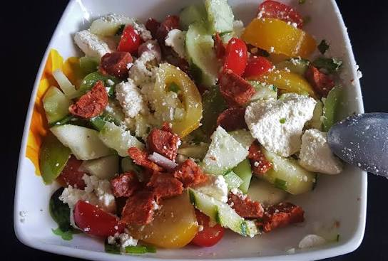
Mélange de légumes frais, œufs durs et vinaigrette maison.
🌶️ Piquant : Aucun
⏱️ Préparation : 10 minutes
💰 Prix : 3 000 FCFA

Tendres morceaux de bœuf grillés accompagnés d'une sauce maison.
🌶️ Piquant : Moyen
⏱️ Préparation : 20 minutes
💰 Prix : 3 800 FCFA
À accompagner d'un jus de gingembre ou d'une bière locale bien fraîche.
Découvrez les incontournables de la cuisine congolaise, préparés avec des produits frais et un savoir-faire traditionnel.
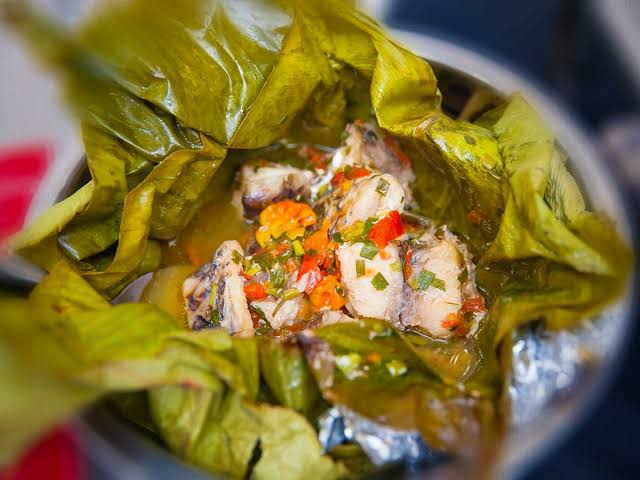
Véritable spécialité congolaise, notre Liboké est préparé selon une recette familiale qui préserve toute la richesse des épices locales.
⭐⭐⭐⭐⭐ 4,9 / 5
Accompagnez ce plat d'un jus de gingembre frais pour une expérience encore plus authentique.
Contient du poisson.
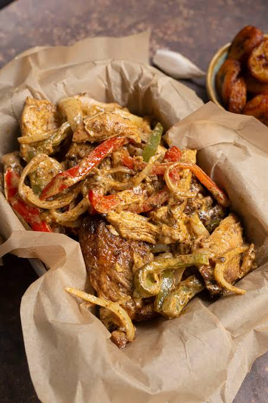
Poulet braisé lentement, accompagné d'une sauce aux oignons, de bananes plantains et d'épices soigneusement sélectionnées.
⭐⭐⭐⭐⭐ 4,8 / 5
"Le meilleur Poulet Mayo de Brazzaville."
À déguster avec une sauce piment maison.
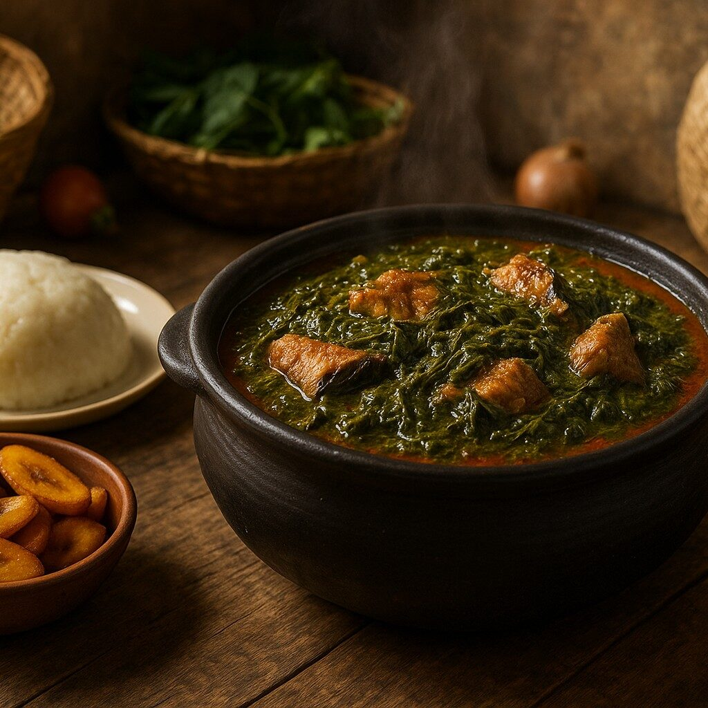
Le Saka-Saka est préparé à partir de feuilles de manioc pilées, lentement mijotées avec du poisson fumé.
⭐⭐⭐⭐☆ 4,7 / 5
Se marie parfaitement avec une Manioc artisanale.
Contient du poisson et de l'arachide.
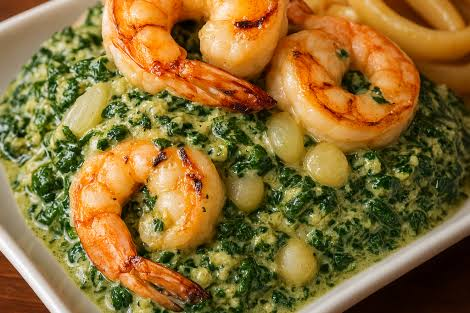
Le Coco est préparé à partir de feuilles sauvages finement hachées, cuites lentement avec des crevettes, de la pâte d'arachide et des épices locales.
⭐⭐⭐⭐⭐ 4,8 / 5
Contient des crustacés et de l'arachide.
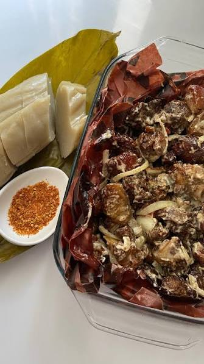
Notre Ngulu est mariné pendant plusieurs heures avant d'être lentement braisé afin d'obtenir une viande tendre et savoureuse.
⭐⭐⭐⭐⭐ 4,9 / 5
Idéal avec des bananes plantains grillées et un jus de bissap.
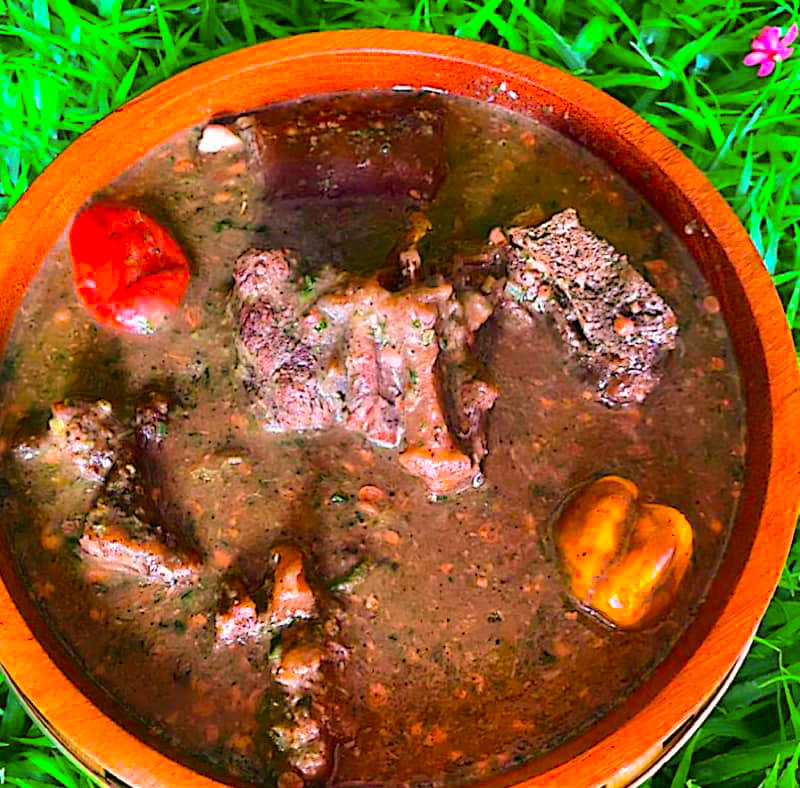
Une revisite gourmande du Maboké traditionnel, préparé avec une viande de bœuf marinée puis cuite lentement dans des feuilles de bananier.
⭐⭐⭐⭐☆ 4,7 / 5
Ce plat ne contient aucun allergène majeur déclaré.
Nos légumes, viandes et poissons sont sélectionnés quotidiennement auprès de fournisseurs locaux.
Tous nos plats sont préparés sur place, sans préparation industrielle.
Nous privilégions les producteurs congolais afin de promouvoir les richesses de notre terroir.
Votre satisfaction est au cœur de notre démarche. Notre équipe est à votre écoute pour rendre chaque repas inoubliable.
Terminez votre repas sur une note sucrée avec nos desserts préparés chaque jour.
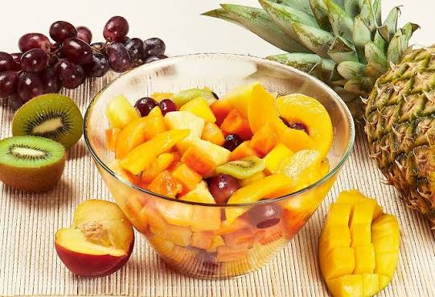
Ananas, mangue, papaye, pastèque et banane, découpés le jour même.
💰 2 500 FCFA

Servis chauds avec sucre glace.
💰 2 000 FCFA
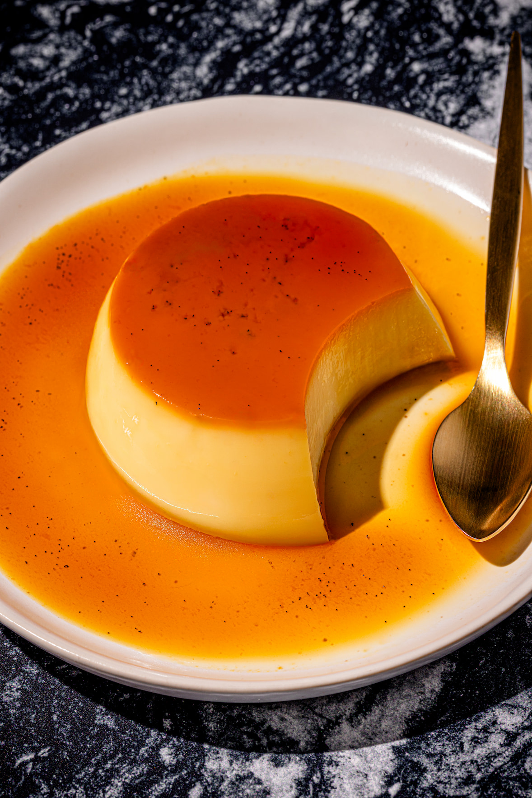
Une crème légère parfumée à la vanille recouverte d'un caramel fondant.
💰 2 800 FCFA
Accompagnez votre repas avec une sélection de boissons fraîches.
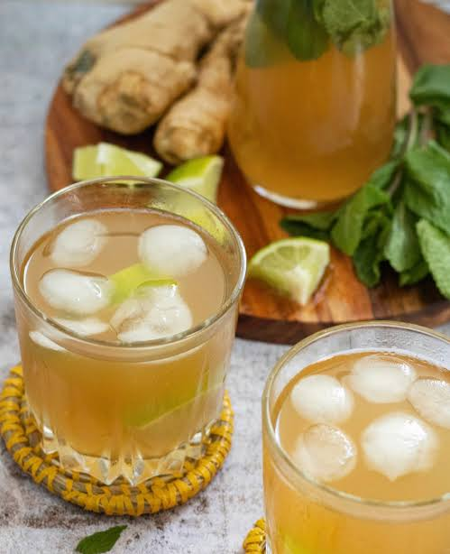
Rafraîchissant, légèrement épicé.
💰 1 500 FCFA
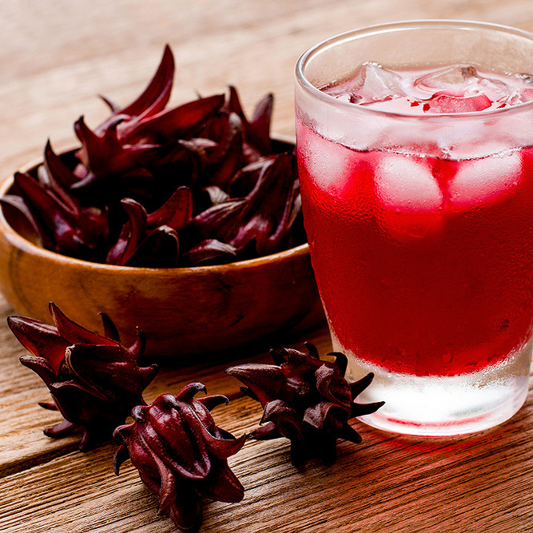
Préparé à partir de fleurs d'hibiscus.
💰 1 500 FCFA
Pour satisfaire tous les goûts et tous les budgets, le Restaurant Perets propose plusieurs formules adaptées aux repas en famille, entre amis ou aux déjeuners professionnels.
| Catégorie | Nombre de plats | Prix minimum | Prix maximum |
|---|---|---|---|
| Entrées | 5 | 2 000 FCFA | 3 800 FCFA |
| Plats Principaux | 6 | 6 500 FCFA | 9 000 FCFA |
| Desserts | 3 | 2 000 FCFA | 2 800 FCFA |
| Boissons | 6 | 1 000 FCFA | 3 500 FCFA |
| Les prix sont indiqués en Franc CFA (XAF). | |||
1 Entrée + 1 Plat + 1 Boisson
9 500 FCFA
Entrée + Plat + Dessert + Boisson
12 500 FCFA
Entrée + Plat Signature + Dessert + Boisson + Café
16 000 FCFA
Nous sommes heureux de vous accueillir tout au long de la semaine.
Un parking gratuit est disponible pour notre clientèle.
Notre établissement peut accueillir jusqu'à 120 personnes dans un cadre confortable.
Nous serons ravis de vous accueillir. Remplissez le formulaire ci-dessous afin que notre équipe prépare votre arrivée.
Une question avant votre réservation ? Notre équipe est à votre disposition.
Restaurant PeretsLa réservation est fortement recommandée, notamment les week-ends et les jours fériés, afin de garantir votre table.
Oui, nous proposons un service de livraison dans plusieurs quartiers de Brazzaville.
Oui. Nous acceptons MTN Mobile Money, Airtel Money, les cartes bancaires ainsi que les paiements en espèces.
Oui. Notre salle peut accueillir des anniversaires, réunions professionnelles, repas d'entreprise et autres événements privés.